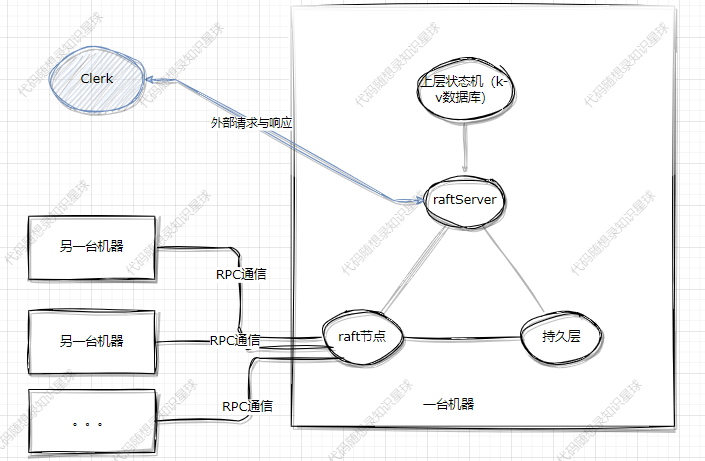
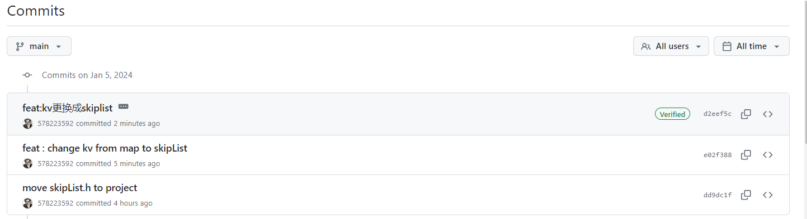
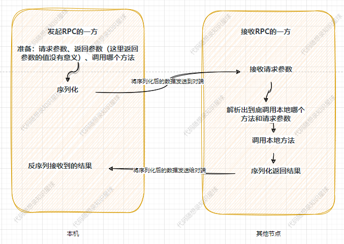
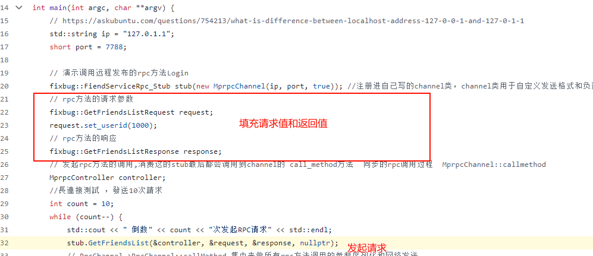
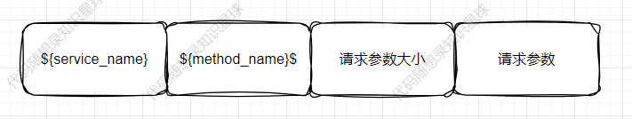
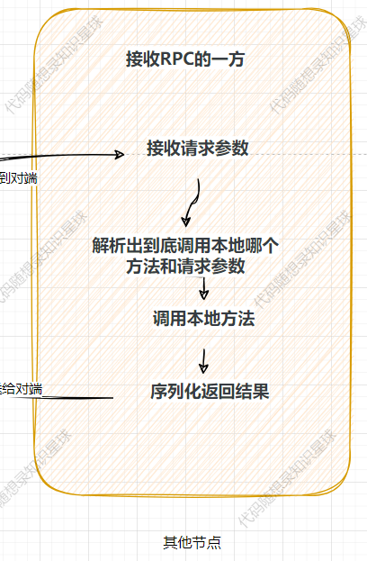

CPPRaft系列-剩余部分-06
第六篇-剩余部分
good news！！！
代码又又又又更新了，目前已经更新了clerk，可以set和get数据了，而且已经将内部的存储引擎换成了卡哥的跳表实现。
https://github.com/youngyangyang04/KVstorageBaseRaft-cpp
首先我们看下第五章的架构图，图中的主要部分我们在前几张讲解完毕了，目前还剩下clerk和k-v数据库，而本篇的重点在于补全版图，完成：clerk、kv、RPC原理的讲解。

clerk的主要功能及代码
主要功能
clerk相当于就是一个外部的客户端了，其作用就是向整个raft集群发起命令并接收响应。
代码实现
在第五篇的kvServer一节中有过提及，clerk与kvServer需要建立网络链接，那么既然我们实现了一个简单的RPC，那么我们不妨使用RPC来完成这个过程。
clerk本身的过程还是比较简单的，唯一要注意的：对于RPC返回对端不是leader的话，就需要另外再调用另一个kvServer的RPC重试，直到遇到leader。
clerk的调用代码在这里
可以看到这个代码逻辑相当简单，没啥难度，不多说了。
让我们看看Init函数吧，这个函数的作用是连接所有的raftKvServer节点，方式依然是通过RPC的方式，这个是raft节点之间相互连接的过程是一样的。
接下来让我们看看put函数吧，put函数实际上调用的是PutAppend。
这里可以注意。
m_requestId++; m_requestId每次递增。
m_recentLeaderId; m_recentLeaderId是每个clerk初始化的时候随机生成的。
这两个变量的作用是为了维护上一篇所述的“线性一致性”的概念。
server = (server+1)%m_servers.size(); 如果失败的话就让clerk循环节点进行重试。
跳表
原理简单讲解
网络上讲解跳表的博客实在多如牛毛，前人之述备矣。
我这里就不献丑了。
授人以鱼不如授人以渔，本人学习跳表主要参考的资料是：
如何植入
哦吼，我们尝试一下将卡哥的跳表植入我们的项目中吧。
卡哥的跳表在：https://github.com/youngyangyang04/Skiplist-CPP ，我们首先把文件添加到我们的项目中。
项目提示中告诉我们如果要修改key的类型，需要自定义比较函数，同时需要修改load_file。
我们后面准备使用std::string作为key，所以不用自定义比较函数了诶。
而load_file文件落盘的一部分，就算不说的话我们这边也打算自己落盘。
下面开始改造吧。
下面只会讲解关键的改造，具体涉及的文件修改大家可以查看github的提交记录。当然目前还没考虑性能问题，只是做到了“可运行”，也许可以针对我们目前的场景做一些比如锁粒度的优化，欢迎大家issue和pr。仓库地址在本文开头。

具体链接在：https://github.com/youngyangyang04/KVstorageBaseRaft-cpp/commit/e02f388e6d2c2243e447d2a4f74a6abd13ccc226
1.修改dump和load接口
原来卡哥仓库中的这两个接口的逻辑是直接落盘和从文件中读取数据，我们稍微读读代码。
原来的关键代码：
其中_file_writer的定义为： std::ofstream _file_writer;
代码逻辑是在不断遍历的过程中是不断的将数据写入到了磁盘，其中使用了:和\n作为分隔符。
对前面的部分还有映像的小伙伴可能已经反应过来了，这里有数据不安全的问题，即key和value中如果已经存在’:’ \n字符的时候程序可能会发送异常。
为了数据安全，这里采用的方法依然是使用boost的序列化库。
SkipListDump<K, V>类增加的作用就是为了安全的序列化和反序列化。
其定义也非常简单,与raft和kvServer中的序列化方式相同，也是boost库序列化的最简单的方式：
2.skipList增加void insert_set_element(K&,V&);接口
增加的原因是因为这样可以和下层的kvServer的语义配合，kvServer中的set方法的语义是：key不存在就增加这个key，如果key存在就将value修改成新值。
这个作用与insert_element相同类似，insert_set_element是插入元素，如果元素存在则改变其值。
而insert_element是插入新元素，但是存在相同的key不会进行插入。关键代码如下：
同时我们需要注意，在实现insert_set_element元素的时候应该不能找到这个节点，然后直接修改其值。因为后续可能会有类似“排序”这样的拓展功能，因此目前insert_set_element的实现是删除旧节点，然后再插入的方式来实现。
更多
已知/可能的bug：
- dump和load数据库的性能问题，锁安全问题
- 序列化（kvServer代码中）更优雅的实现:因为kvServer需要调用跳表让其序列化dump，这块没有找到与boost比较好的结合方式。目前方式是增加了一个变量m_serializedKVData，后面可以查看一下是否有更好的方式。
- 原来代码中数据库快照落盘这里并没有仔细的考量，后面可以考虑做一份。
- 在装载磁盘的时候应该将数据库重新清空
- 序列化方式的统一
项目中RPC
原理和运行流程简单讲解
最开始到现在我们都一直在使用RPC的相关功能，但是作为底层的基础构件，这里对RPC的实现做一些简单的介绍。
RPC的相关代码在这里。
本项目使用到的RPC代码高度依赖于protobuf。
RPC 是一种使得分布式系统中的不同模块之间能够透明地进行远程调用的技术，使得开发者可以更方便地构建分布式系统，而不用过多关注底层通信细节，调用另一台机器的方法会表现的像调用本地的方法一样。
那么无论对外表现如何，只要设计多个主机之间的通信，必不可少的就是网络通讯这一步
我们可以看看一次RPC请求到底干了什么？

首先看下【准备：请求参数、返回参数（这里返回参数的值没有意义）、调用哪个方法】这一步，这一步需要发起者自己完成，如下：

在填充完请求值和返回值之后，就可以实际调用方法了。
我们点进去看看：
可以看到这里相当于是调用了channel_->CallMethod方法，只是第一个参数变成了descriptor()->method(0)，其他参数都是我们传进去的参数没有改变，而这个descriptor()->method(0)存在的目的其实就是为了表示我们到底是调用的哪个方法。
到这里远端调用的东西就齐活了：方法、请求参数、响应参数。
还记得在最开始生成stub的我们写的是：fixbug::FiendServiceRpc_Stub stub(new MprpcChannel(ip, port, true));，因此这个channel_本质上是我们自己实现的MprpcChannel类，而channel_->CallMethod本质上就是调用的MprpcChannel的CallMethod方法。
我们简单看下这个CallMethod方法干了什么？
函数的定义在这里，比较简单：
按照

这样的方式将所需要的参数来序列化，序列化之后再通过send函数循环发送即可。
可能的改进：在代码中send_rpc_str.insert(0, std::string((char *)&header_size, 4));我们可以看到头部长度固定是4个字节，那么这样的设计是否合理？如果不合理如何改进呢？
到了这一步，所有的报文已经发送到了对端，即接收RPC的一方，那么此时应该在对端进行：

这一系列的步骤。
这一系列步骤的主要函数发生在：RpcProvider::OnMessage。
我们看下这个函数干了什么？
首先根据上方序列化的规则进行反序列化，解析出相关的参数。
然后根据你要调用的方法名去找到实际的方法调用即可。
相关函数是在NotifyService函数中中提前注册好了，因此这里可以找到然后调用。
在这个过程中使用了protobuf提供的closure绑定了一个回调函数用于在实际调用完方法之后进行反序列化相关操作。
为啥这么写就算注册完反序列化的回调了呢？肯定是protobuf为我们提供了相关的功能，在后面代码流程中也会看到相对应的过程。
真正执行本地方法是在 service->CallMethod(method, nullptr, request, response, done);，为什么这个方法就可以调用到本地的方法呢？
这个函数会因为多态实际调用生成的pb.cc文件中的CallMethod方法。
我们看下这个函数干了什么？
这个函数和上面讲过的FiendServiceRpc_Stub::GetFriendsList方法有似曾相识的感觉。都是通过xxx->index来调用实际的方法。
正常情况下校验会通过，即触发case 0。
然后会调用我们在FriendService中重写的GetFriendsList方法。
这个函数逻辑比较简单：调用本地的方法，填充返回值response。
然后调用回调函数done->Run();，还记得我们前面注册了回调函数吗？
在回调真正执行之前，我们本地方法已经触发了并填充完返回值了。
此时回看原来的图，我们还需要序列化返回结果和将序列化后的数据发送给对端。
done->Run()实际调用的是：RpcProvider::SendRpcResponse。
这个方法比较简单，不多说了。
到这里，RPC提供方的流程就结束了。
从时间节点上来说，此时应该对端来接收返回值了，接收的部分在这里，还在 MprpcChannel::CallMethod部分：
将接受到的数据按照情况实际序列化成response即可。
这里就可以看出现在的RPC是不支持异步的，因为在MprpcChannel::CallMethod方法中发送完数据后就会一直等待着去接收。
protobuf库中充满了多态，因此推荐大家阅读的时候采用debug的方式。
注：因为目前RPC的网络通信采用的是muduo，muduo支持函数回调，即在对端发送信息来之后就会调用注册好的函数，函数注册代码在：
这里讲解的RPC其实是比较简单的，并没有考虑：服务治理与服务发现、负载均衡，异步调用等功能。
后续再优化的时候可以考虑这些功能。
辅助功能
这里稍微提一下在整个项目运行中的一些辅助的小组件的实现思路以及一些优化的思路。
这些组件实现版本多样，而且与其他模块没有关联，相对也比较简单，但正是如此，这方面可以多学习一下比较优秀的实现，然后稍微测试测试，面试的时候拿出来说一说。
因为面试的时候面试官很难绝对你的整体设计架构会有多么优秀，更多的是看到你的某个设计细节怎样。
LockQueue的实现
代码在这里。其实就是按照线程池最基本的思路，使用锁和条件变量来控制queue。
那么一个可能的问题就是由于使用了条件变量和锁，可能在内核和用户态会来回切换，有没有更优秀的尝试呢？
比如：无锁队列，使用自旋锁优化，其他。。。。
这里推荐大家可以多试试不同的实现方式，然后测试对比，面试的话很有说法的。
Defer函数等辅助函数的实现
在代码中经常会看到Defer类，这个类的作用其实就是在函数执行完毕后再执行传入Defer类的函数，是收到go中defer的启发。
主要是RAII的思想，如果面试的时候提到了RAII，那么就可以说到这个Defer，然后就牵扯过来了。
怎么使用boost库完成序列化和反序列化的
主要参考BoostPersistRaftNode类的定义和使用。
在本篇正文部分如何植入跳表的部分讲解过了，这里就不重复了。
是否还有可做的工作
在代码层面可以做的工作还有很多，主要但不限于包括：
- 现有实现的更优雅的版本。
- 可能的性能测试，比如火焰图分析系统的耗时。
- 一些组件的引入和优化，比如LockQueue更好的实现，日志库，异步RPC等等。最近在星球中不是正好有大佬分享了协程库的实现，在raft中到处都是多线程，那么是否可以引入协程库呢哈哈哈
这里欢迎大家后续对github仓库上的代码进行优化迭代，任何一个小的改动都是欢迎的。
对大家的好处是可以学习到github仓库的协作流程，成为contributor，如果；其次正如正文所言，如果对一个点做的比较细的话，面试的话是很有讲头的。
到这里本系列的文章应该是结束了，没有其他意外的话后续更新主要集中在代码补全与修正上。
欢迎大家提出issue和pr提出bug和改进思路。毕竟没有反馈很难知道大家希望更新哪部分的功能，或者现在的仓库功能已经足够。
最后希望输出的内容能对大家有帮助。
![]()